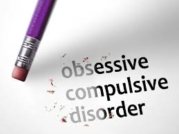

Apa itu Psikologi?
Pengertian
Psikologi adalah salah satu bidang ilmu pengetahuan dan ilmu terapan yang mempelajari mengenai perilaku, fungsi mental, dan proses mental manusia secara ilmiah. Para praktisi dalam bidang psikologi disebut para psikolog. Para psikolog berusaha mempelajari peran fungsi mental dalam perilaku individu maupun kelompok, selain juga mempelajari tentang proses fisiologis dan neurobiologis yang mendasari perilaku.
Objek Kajian
Objek kajian psikologi terbagi menjadi 4, yaitu;
- Psikologi Perkembangan
- Psikologi Sosial
- Studi tentang pengaruh sosial terhadap proses individu, misalnya studi tentang persepsi, motivasi proses belajar, atribusi (sifat).
- studi tentang proses-proses individual bersama, seperti bahasa, sikap sosial, perilaku meniru dan lain-lain.
- studi tentang interaksi kelompok, seperti kepemimpinan, komunikasi hubungan kekuasaan, kerjasama dalam kelompok, dan persaingan.
- Psikologi Kepribadian
- Psikologi Kognitif
bidang studi psikologi yang mempelajari perkembangan manusia dan faktor-faktor yang membentuk prilaku seseorang sejak lahir sampai lanjut usia.
Bidang ini mempunyai 3 ruang lingkup, yaitu :
Bidang studi psikologi yang mempelajari tingkah laku manusia dalam menyesuaikan diri dengan lingkungannya, serta bagaimana cara individu berinteraksi sosial dengan lingkungannya.
Bidang studi psikologi yang mempelajari kemampuan kognisi, seperti: Persepsi, proses belajar, kemampuan memori, atensi, kemampuan bahasa dan emosi.
Wilayah Terapan
Wilayah terapan psikologi adalah wilayah-wilayah di mana kajian psikologi dapat diterapkan. Diantaranya yakni:
- Psikologi Pendidikan
- Psikologi Industri dan Organisasi
- Psikologi Kerekayasaan
- Psikologis Klinis
Psikologi pendidikan berusaha menciptakan situasi yang mendukung bagi anak didik dalam mengembangkan kemampuan akademik, sosialisasi, dan emosi. Yang bertujuan untuk membentuk mind set anak
Psikologi industri memfokuskan pada mengembangkan, mengevaluasi dan memprediksi kinerja suatu pekerjaan yang dikerjakan oleh individu.
Sedangkan psikologi organisasi mempelajari bagaimana suatu organisasi memengaruhi dan berinteraksi dengan anggota-anggotanya
Penerapan psikologi yang berkaitan dengan interaksi antara manusia dan mesin untuk meminimalisasikan kesalahan manusia ketika berhubungan dengan mesin (human error)
Penerapan psikologi dalam memahami, mencegah dan memulihkan keadaan psikologis individu ke ambang normal.
Kelainan Psikologi
Berikut beberapa kelainan psikologi berat, yang paling umum dan banyak terjadi.
- Bipolar Disorder
- Skizofrenia
- Psikopat
- Obsesif Comfulsif Disorder(OCD)
- Alter Ego

